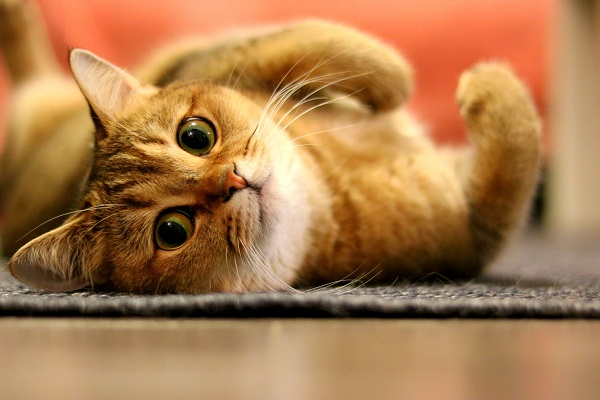

Alimentación
Una dieta adecuada, agua limpia y horarios regulares son fundamentales para la salud de la mascota.
Esta página divulga información básica y clara sobre el cuidado responsable de perros, gatos y otras mascotas domésticas. Su contenido es editable y fue pensado para fines educativos y familiares.
Información breve y útil para mantener el bienestar de las mascotas.
Una dieta adecuada, agua limpia y horarios regulares son fundamentales para la salud de la mascota.
Las vacunas, desparasitación y visitas periódicas al veterinario ayudan a prevenir enfermedades.
El afecto, el ejercicio y un entorno seguro fortalecen el vínculo entre la mascota y su familia.
Adoptar, esterilizar, alimentar correctamente y brindar atención médica son acciones concretas de cuidado.
Cada mascota representa una historia de cuidado, compañía y responsabilidad. Esta galería reúne imágenes que reflejan la importancia de la protección animal, la adopción responsable y el bienestar de los animales domésticos en distintos entornos familiares y sociales.

En la pestaña de juego encontrará preguntas y respuestas sobre cuidados de mascotas.